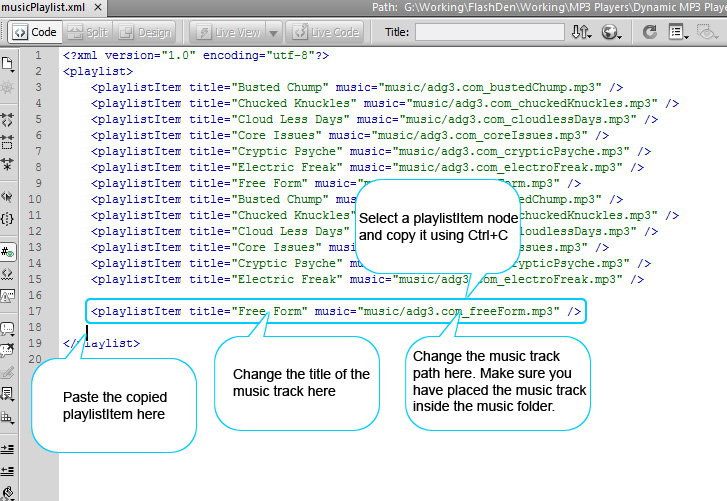

How to Take this Component Inside Another FLA File?
Open your destination (your own) .fla file
Click File Menu -> Choose Import -> Import External Library... (or use Ctrl+Shift+O)
Browse to the folder where you have unzipped the Dynamic XML Music MP3 Player
Choose DynamicMP3Player.fla and click Open
Library panel of the DynamicMP3Player.fla will open in the Flash IDE with all the assets inside the MP3_Player_Assets folder.
Drad MP3_Player_Assets folder inside your destination .fla file's library panel.
To Use it just drag the LucidMusicPlayer movieclip from the library panel to the stage.
Now also copy the net, com and other related folders of the Dynamic XML Music MP3 Player to the folder in which your .fla file exists in which you just copied the assets from DynamicMP3Player.fla file.
Test and it should work.
How to Add/Remove Music Tracks?
Open the musicPlaylist.xml file and follow the instructions in the image given below:

Configuration Parameters:
You set 4 settings of the mp3 player using the flashvars in the html embed code. Please see the source code of DynamicMP3Player_With_FlashVars.html for the usage of flashvars method and how to set the parameters using flashvars method. If you don't set the configuration parameters through flashvars then default values in the actionscript will be used. You can also modify the default values in the actionscript code. Following is the list of configuration parameters to be set from flashvars:
playlistFile: Use this parammeter to pass the playlist file's path via the flashvars. This opens the possibilities of using this mp3 player multiple times within a single html page because you can then pass a different playlist file to each instance of the mp3 player via flashvars.
autoPlay: Possible values are yes and no. If autoPlay is set to true then the player will start playing the music track as soon the xml file is loaded otherwise not if set to no
showPlaylist: You can hide the playlist by setting the value of showPlaylist to no.
bufferTime: Use this flashvar to set the buffer size before the music starts playing.
showScrollBar: You can hide the scrollbar by setting the value of showScrollBar to no. If you set the value of showScrollbar to no then you/users can use the mousewheel button to scroll playlist Items.
loop: plays all the songs in loop mode.
How do I get special characters such as âæèêíó to show up in text fields?
You need to embed these special characters in the text fields first.
Open the FLA and select the text field. In the properties panel, press the “Embed” button and you will then see a field labelled “Include these characters” – paste the special characters that you need here.
Note:
The encoding of the xml file should always be set to UTF -8. You can set the encoding type by choosing 'save as' and selecting UTF -8.
Note:
Some of the fonts don't support special characters. So make sure that the font you want to use has support of special characters. You can check the character supported by a font by opening the font in a character map.
How to Change the Font or Font Size of the Playlist Item?
Find LucidMusicPlayerPlaylistItem movieclip inside the Assets folder in the library panel and double click it.
Select the textfield and open properties panel.
Change the font face and font size from the properties panel.
Save the file and re-publish the swf file for the changes to take effect.
How to Change the Font or Font Size of the Now Playing Title?
Double musicPlayer movieclip.
Select the musicTitle textfield and open properties panel.
Change the font face and font size from the properties panel.
Save the file and re-publish the swf file for the changes to take effect.
Note:
Similarly you can change the font face and font size of the timeInfo textfield (which shows the music track length and current playing time).
Included Files/Folders
DynamicMP3Player.fla
DynamicMP3Player.swf
DynamicMP3Player.html
xml folder which contains the musicPlaylist.xml file
com folder which contains fuse kit engine and a utility class by bigspaceship design studio
net folder which contains the Music Player's core actionscript class files